Find your book
Every book here is a novel first, written the way a particular kind of reader likes, with something real to learn inside. Pick what you love and what you'd like to understand. Chapter one of each is free.
I love reading…
I'd like to understand…
Money
 Click Here to VerifyA domestic thrillerteaches scams and fraud
Click Here to VerifyA domestic thrillerteaches scams and fraud Reserve PriceA film-star sagateaches money across a lifetime
Reserve PriceA film-star sagateaches money across a lifetime A Trade in WindA Jazz Age novelteaches bubbles and crashes
A Trade in WindA Jazz Age novelteaches bubbles and crashes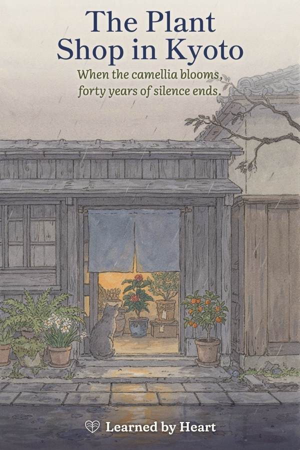
The Plant Shop in KyotoA gentle, cosy novelteaches running a small business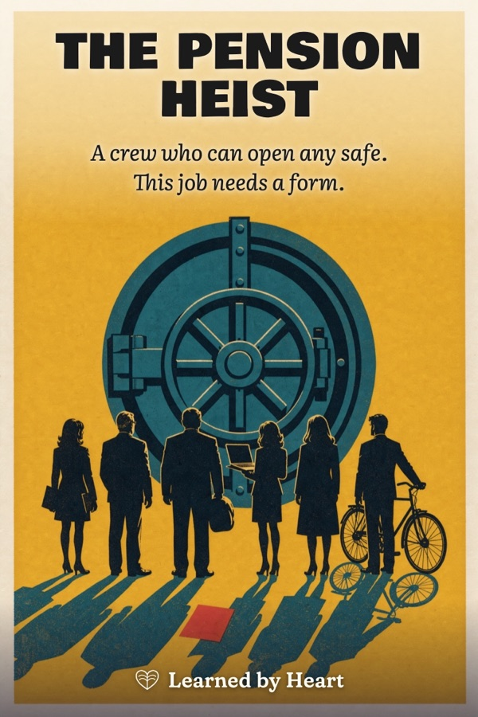
The Pension HeistA caper comedyteaches pensions and retirement saving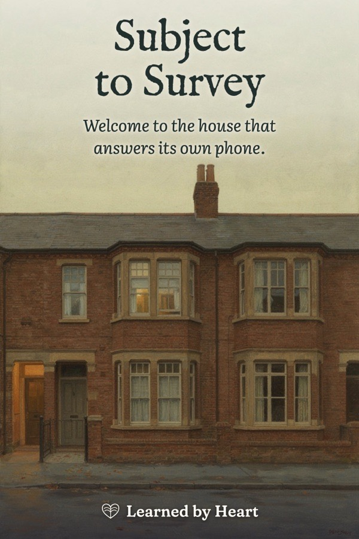
Subject to SurveyA haunted-house gothicteaches buying a home Inflation, DarlingA glossy 1970s sagateaches inflation and how economies work
Inflation, DarlingA glossy 1970s sagateaches inflation and how economies work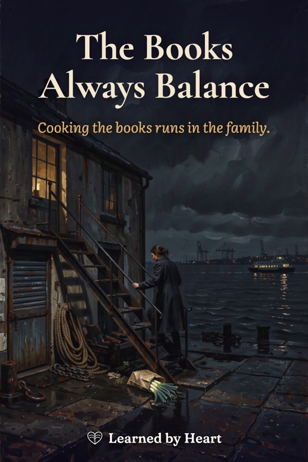
The Books Always BalanceA crime family sagateaches accounting
Science and the body
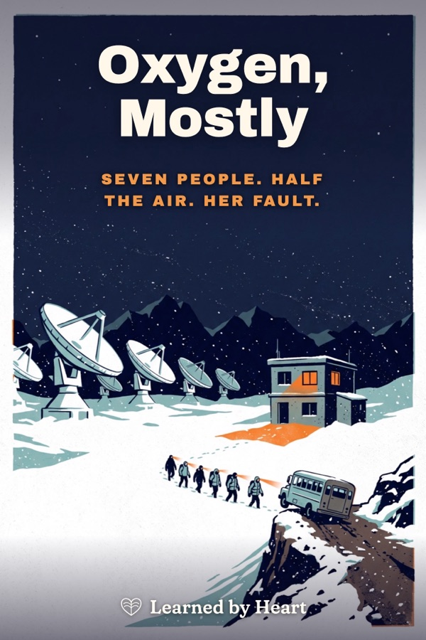
Oxygen, MostlyA funny science survival storyteaches how the body works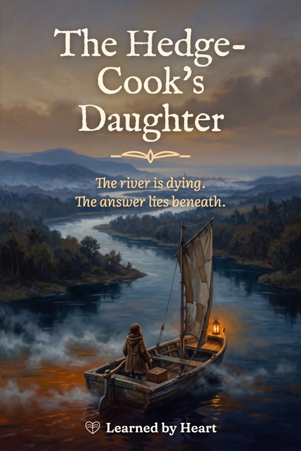
The Hedge-Cook's DaughterA storybook fantasyteaches everyday chemistry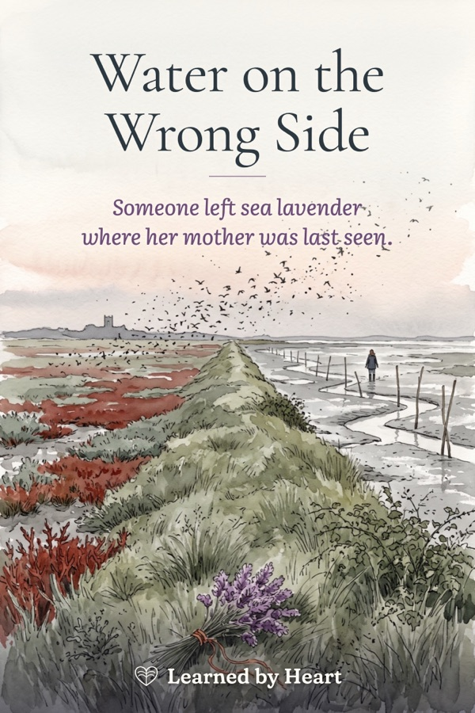
Water on the Wrong SideA marshland mysteryteaches wetlands, weather and climate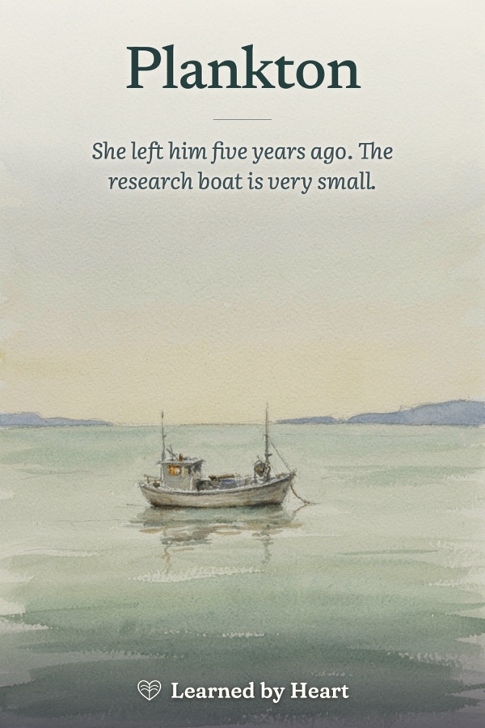
PlanktonA quiet love storyteaches climate science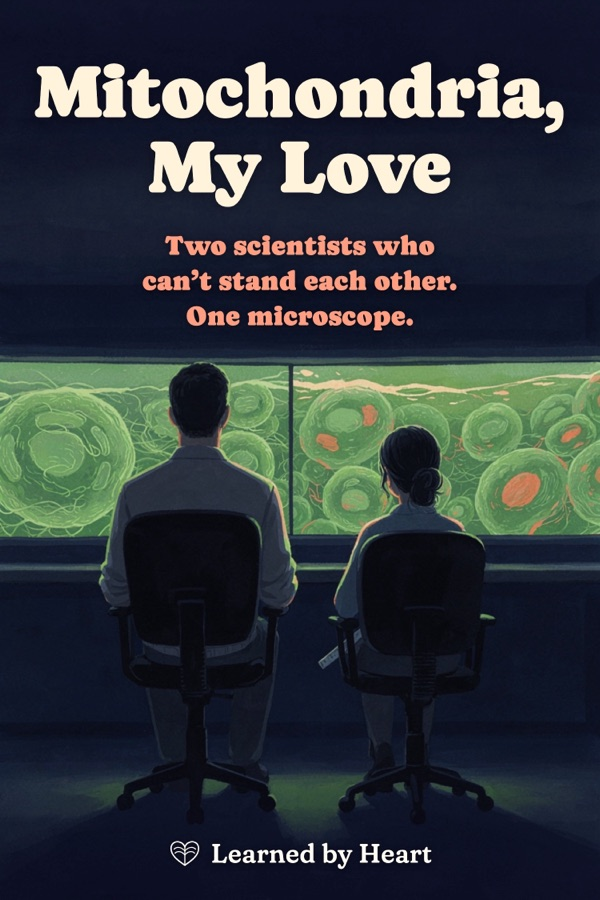
Mitochondria, My LoveA lab romantic comedyteaches cell biology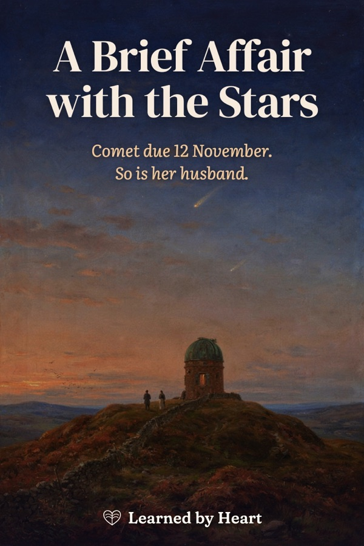
A Brief Affair with the StarsA sweeping love storyteaches astronomy and space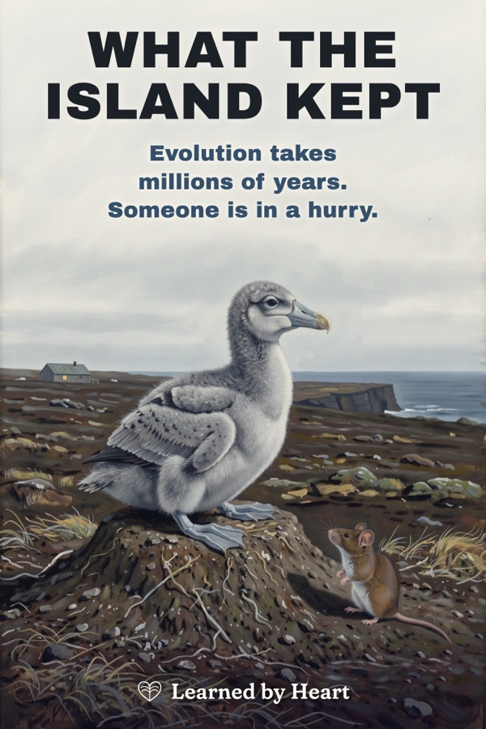
What the Island KeptA science thrillerteaches genetics and evolution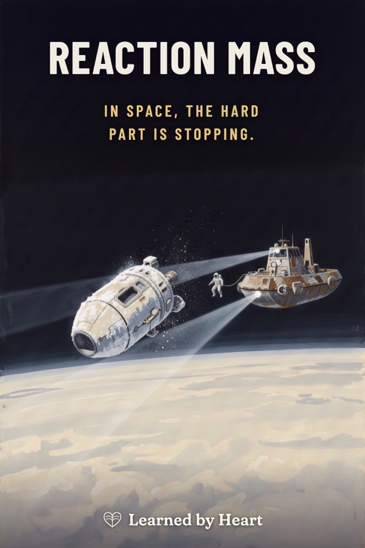
Reaction MassA space operateaches everyday physics The Cold StoreA Nordic noirteaches forensic science
The Cold StoreA Nordic noirteaches forensic science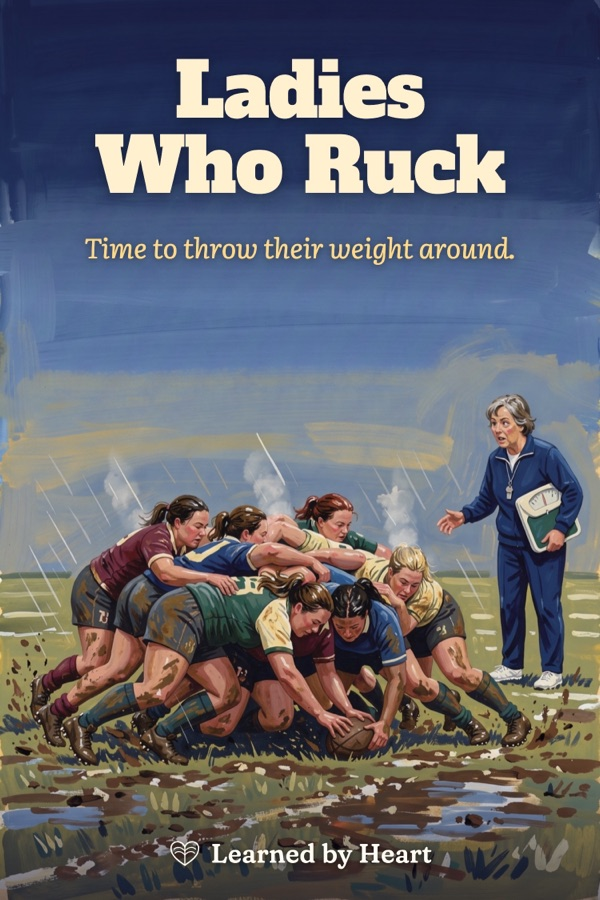
Ladies Who RuckA sports comedyteaches how muscles grow and what food does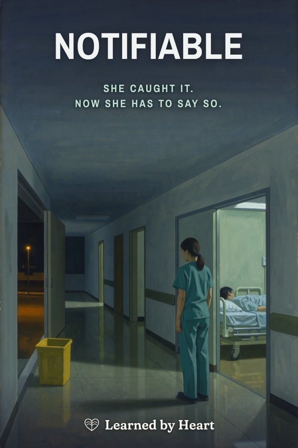
NotifiableA hospital dramateaches the immune system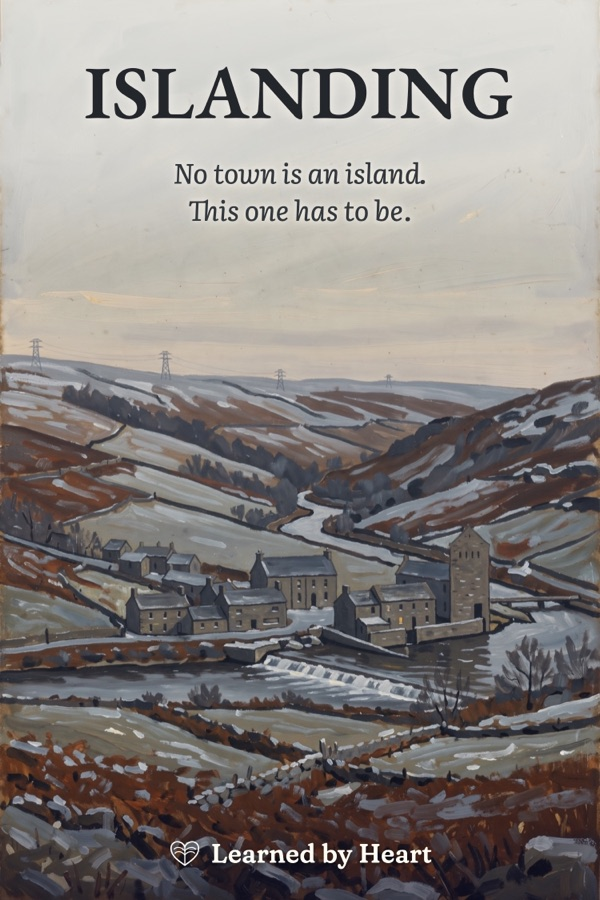
IslandingA literary novel after the blackoutteaches electricity and energy
History
 Six Queens' Worth of ThreadA Tudor court dramateaches the Tudors
Six Queens' Worth of ThreadA Tudor court dramateaches the Tudors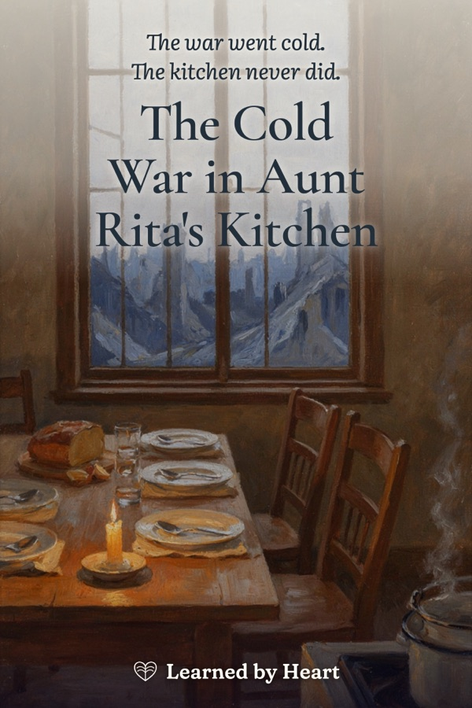
The Cold War in Aunt Rita's KitchenA family sagateaches the Cold War, start to finish The Drawing OfficeA wartime novelteaches the Second World War, start to finish
The Drawing OfficeA wartime novelteaches the Second World War, start to finish The Last Honest SenatorA Roman political thrillerteaches the fall of the Roman Republic
The Last Honest SenatorA Roman political thrillerteaches the fall of the Roman Republic The Snake King's DaughterA Greek myth retellingteaches the ancient Greek world
The Snake King's DaughterA Greek myth retellingteaches the ancient Greek world
How people think
 Turn Towards MeA romantic comedyteaches the science of relationships
Turn Towards MeA romantic comedyteaches the science of relationships The Lantern HourA dystopian adventureteaches propaganda and misinformation
The Lantern HourA dystopian adventureteaches propaganda and misinformation The Keeper's HoursA quiet literary novelteaches Stoic philosophy for everyday life
The Keeper's HoursA quiet literary novelteaches Stoic philosophy for everyday life Again, TuesdayA time-loop thrillerteaches habits and memory
Again, TuesdayA time-loop thrillerteaches habits and memory The Turned PillowA cosy fantasyteaches sleep
The Turned PillowA cosy fantasyteaches sleep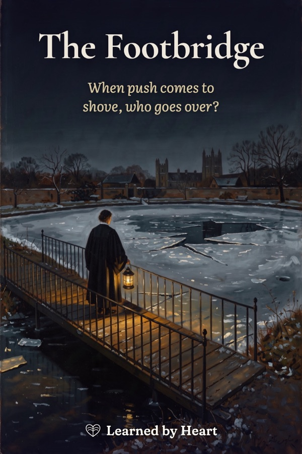
The FootbridgeA dark academia novelteaches moral philosophy A Poisoner Made of FogA Victorian mysteryteaches cognitive biases and clear thinking
A Poisoner Made of FogA Victorian mysteryteaches cognitive biases and clear thinking
Numbers and computers


Life skills
 The Knife TableA romantasyteaches negotiation
The Knife TableA romantasyteaches negotiation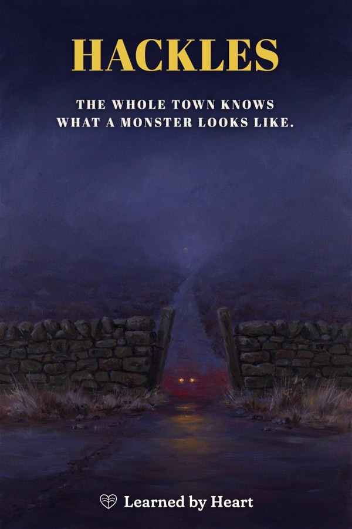
HacklesA small-town horrorteaches dog behaviour and training The Year of the Late HarvestA vineyard family sagateaches wine
The Year of the Late HarvestA vineyard family sagateaches wine Piano, PianoA summer romanceteaches beginner Italian
Piano, PianoA summer romanceteaches beginner Italian A Very Good CopyA Regency romanceteaches how to look at a painting
A Very Good CopyA Regency romanceteaches how to look at a painting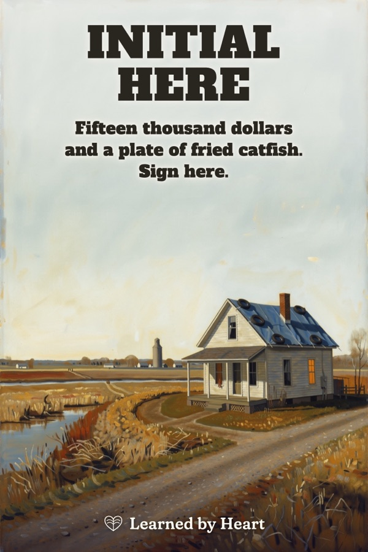
Initial HereA legal thrillerteaches how the law works for ordinary people The Wharf KitchenA small-town romanceteaches how to cook
The Wharf KitchenA small-town romanceteaches how to cook
Nothing quite right?
We'll write one for you, or for someone you love: your favourite kind of book, about the thing you've always meant to learn. Chapter one within 24 hours. If you're not happy with the finished book, you get your money back.
Start your story